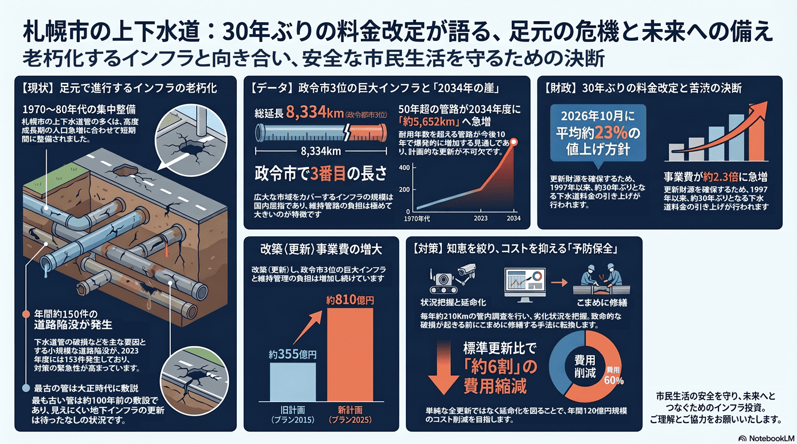

上下水道管の老朽化と料金改定
設置から50年超の管路更新へ、約30年ぶりの料金値上げが迫る。

背景
高度成長期に整備した上下水道管が一斉に更新期を迎える一方、人口減で使用料収入は先細る。更新財源を確保するため、札幌市は約30年ぶりに下水道料金を引き上げる方針を固めた。全国で道路陥没事故も起きており、更新の緊急性は高い。
主要データ
| 下水道料金の改定 | 2026年10月に平均約23%値上げ方針 |
|---|---|
| 前回改定 | 1997年（約30年ぶり） |
| 下水道管の総延長 | 約8,334km（2025年度。政令市で3番目に長い） |
| 50年超の管路（見通し） | 2034年度に約5,652kmへ急増（1970〜80年代に集中整備） |
| 道路陥没 | 年間約150件（2023年度153件、大きな事故はなし） |
| 改築（更新）事業費 | 約355億円（プラン2015）→約810億円（プラン2025）。今後さらに増の見通し |
事実
- 札幌市は老朽化した下水道管の更新や維持管理費の増加を背景に、2026年10月に下水道料金を平均約23%引き上げる方針を固めた。
- 料金改定は1997年以来で、設置から50年以上経過した管の更新による資金不足を防ぐ狙いとされる。
- 札幌市の下水道管の総延長は約8,334km（2025年度）で政令市で3番目に長く、最も古い管は大正期（約100年前）の敷設。標準耐用年数（50年）を超える管路は2034年度に約5,652kmへ急増する見通し。
- 下水道管の破損などを要因とする道路の小規模な陥没は年間約150件（2023年度は153件で大きな事故はなし）起きており、2025年1月の埼玉県八潮市の大規模陥没事故を受け、市は直径2m以上・設置30年以上の管路 約185kmを緊急調査した。
- 改築（更新）事業費はプラン2015の約355億円からプラン2025で約810億円へ増え、今後さらに急増する見通し。市は約210km/年の管内調査で状態を把握し、延命化により標準更新比で約6割（年約120億円規模）の事業費縮減を見込む。
解釈
見えにくい地下インフラの更新は先送りされやすいが、放置すれば陥没事故など重大な事故に直結する。負担増は避けられず、その納得感をどう作るかが問われる。
提案
- 計画的な管路更新と、料金改定の根拠・使途の丁寧な説明。
- 更新の優先順位付けと広域・官民連携による効率化。
深掘り — 市民の声と答え
下水道管が原因で、道路が陥没することはあるの？
ある。札幌でも下水道管の破損などを要因とする小規模な道路陥没が年間約150件（2023年度は153件で大きな事故はなし）起きている。最も古い管は大正期＝約100年前の敷設で、標準耐用年数50年を超える管路は2034年度に約5,652kmへ急増する見通し。2025年1月の埼玉県八潮市の大規模陥没を受け、市は直径2m以上・設置30年以上の約185kmを緊急調査した。
更新にはどれくらいお金がかかるの？ 料金値上げと関係あるの？
下水道の改築（更新）事業費は、プラン2015の約355億円からプラン2025で約810億円へ増え、老朽管の急増で今後さらに膨らむ見通し。市は約210km/年の管内調査で劣化を把握し、こまめな修繕で延命化することで標準更新に比べ約6割（年約120億円規模）に費用を抑える方針。それでも財源は不足するため、2026年10月の下水道料金 平均約23%の値上げ（約30年ぶり）でまかなう構図になっている。
検討体制・メンバー
札幌市水道局・下水道部門が事業を担う。検討会には土木・管路の技術者、料金・経営の専門家、市民・利用者代表（負担の納得感）、防災部局を入れ、更新の優先順位と料金改定の説明を一体で進めることが重要。
AIノート
AIの貢献度は中〜大。センサーや過去の漏水・劣化データから破損リスクの高い管を予測し、限られた予算で更新の優先順位を最適化できる。点検画像のAI判定も有効で、予防保全への転換を強力に後押しする。